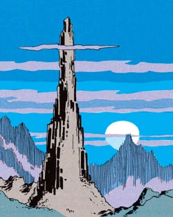
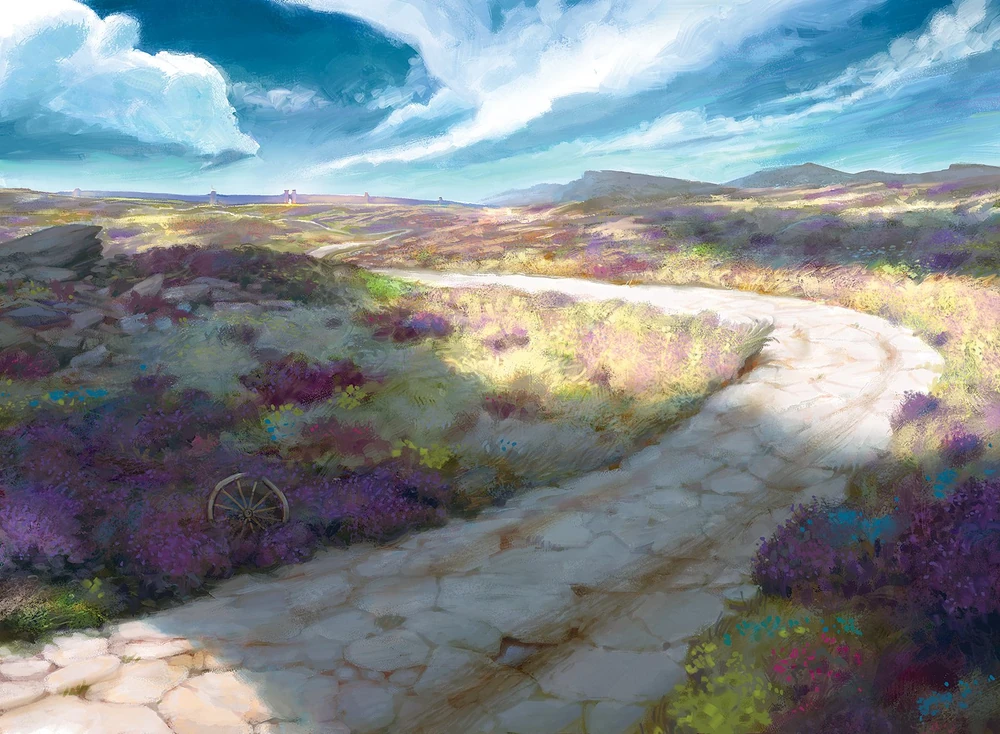

Stoner's Needle
A mysterious spire of stone rising from the landscape, steeped in legend and whispered magic.
Warlock’s Crypt
A place of dark power, home to necromantic horrors and lost knowledge best left undisturbed.

Dragonspear Castle
Once a bastion, now a ruin, this castle holds the echoes of past wars and the scars of demonic incursions.

Ulcaster School of Wizardry
The remains of a long-lost school of magic, where knowledge and peril go hand in hand.

Trade Way
A vital trade route that has seen the march of armies, merchant caravans, and countless adventurers.

Coast Way
Following the shorelines of the Sword Coast, this road connects cities and wildlands alike, offering both commerce and danger.
